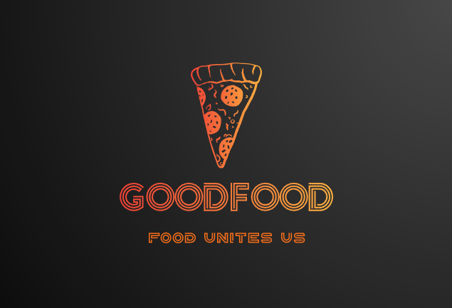

potrebujem oddeliť tieto paragrafy (---1---)
potrebujem oddeliť tieto paragrafy (---2---)
potrebujem oddeliť tieto paragrafy (---3---)
tento text je dolny index
tento text je horný index
| Odkaz na UCM | Odkaz na KAI FPV | Osobný text |
|---|---|---|
| |
 | Niečo tu má byť |
| Toto je naša UCM stranka | Toto je naša kai grid fpv stránka | tuto absolutne netušim čo dať |
tento text
by mohol byť
aj trošku vycentrovaný
Scroll page up